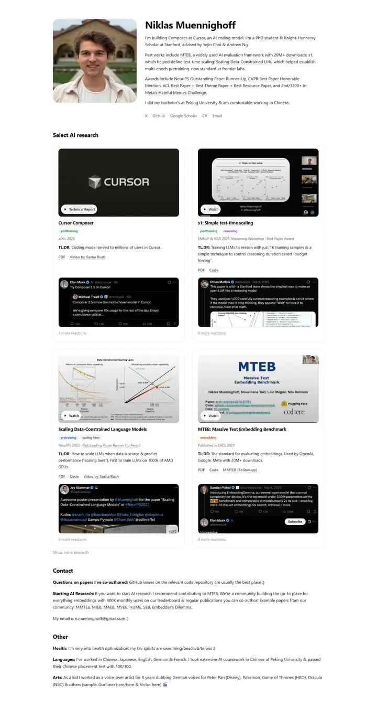

Niklas Muennighoff
A product launch page for papers: white cards with 16:9 teasers, pastel topic chips and screenshots of the internet reacting.

Checked against the rendered page.
Why it is here
Research shown as a media card grid, with teaser images, TL;DR lines and embedded social proof. Very clear presentation of the work.
Overview
Color Palette
Typography
system-ui
Niklas Muennighoff, large language models
Abstract · Method · Results · BibTeX — 0123456789
Spacing & Shape
Page Modules
Guidelines
More like this

Amir Bar
A clean faculty prospectus in Imperial blue: Inter on white, pill links, and paper cards that lift a few pixels when you reach for them.

Christoph Feichtenhofer
A conference-hall banner in Facebook blue, then a long ledger of papers in red ink, green venues and justified grey abstracts.

David Novotny
A harbour at dusk beside a quiet reading room: a fixed teal-to-midnight panel with right-aligned contact lines, and soft grey text with tangerine links on white.

Jaeyeon Kim
A quiet seminar handout in light Roboto, where one red-highlighted question and a row of mint tags are the only raised voices.

Jonathan Shafer
A keynote opening slide: one full-bleed slate-blue field, a ringed portrait, a 108px name and a centred paragraph you read from across the room.

Junyang Lin
A quiet researcher's folio on warm paper: Garamond headings, teal small labels and hairline-ruled entries.